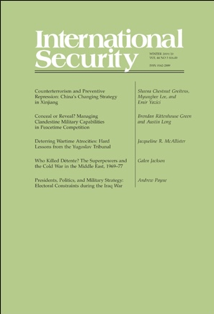

收录于合集

作品简介
【作者】
Caleb Pomeroy是俄亥俄州立大学政治学系博士生。Michael Beckley是塔夫茨大学政治学系助理教授。
【编译】 李雯珲（国政学人编译员，南开大学周恩来政府管理学院）
【校对】 裘谷城、兰星辰
【排版】 高佳美
【文章来源】
Pomeroy, C., & Beckley,M. (2019) Correspondence: Measuring Power in International Relations. InternationalSecurity, 44 (1), 197-200
【期刊简介】 《国际安全》（InternationalSecurity）是国际和国家安全领域的同行评议顶级学术期刊。它成立于1976年，由哈佛大学贝尔弗科学与国际事务中心（Belfer Center for Science and International Affairs at HarvardUniversity）编辑，麻省理工学院出版社（MITPress）每年出版四次。2018年影响力因子为4.500，在“国际关系”类别的85种期刊中排名第二位。
期刊介绍

《国际安全》（International Security）杂志在2018年秋季发表了Michael Beckley的文章《如何测量国家实力》（The Power of Nations:Measuring What Matters）。俄亥俄州立大学博士生Caleb Pomeroy就此文提出了两点异议，Michael Beckley则予以回复。二人的信件于2019年夏季刊登在《国际安全》杂志上，国政学人今加以迻译，以飨读者。
通信： 国际关系中的实力测量
Correspondence: Measuring Power in International Relations
Caleb Pomeroy Michael Beckley
文章导读
一、 原文简要概括
在《如何测量国家实力》一文中，作者Michael Beckley认为传统的测量实力的方法——国内生产总值（GDP）和国家实力综合指数（Composite
Index ofNational Capability,
CINC）没有扣除国家的生产、福利和安全成本，系统性地夸大了人口大国的实力。Beckley认为，测量国家实力应该根据经济和军事资源的净存量，
初步提出以“ GDP ×人均 GDP ”的方法测量国家实力 ，并从理论和案例两方面进行了验证。
原文链接： **
**
【重磅研究】如何测量国家实力：中国真的赶超美国了吗？丨国政学人
**
**
二、CalebPomeroy 质疑
Pomeroy 对文章提出了两点质疑。 第一， Beckley 提出的测量方法在大多数复制研究中并没有提高模型拟合度 。Beckley认为如果用GDP×人均GDP替代CINC和GDP可以提高模型拟合度，更好地解释战争和冲突结果。Beckley用赤池信息量准则（Akaike information criterion, AIC）分别比较了CINC与GDP×人均GDP、GDP与GDP×人均GDP。然而，这种两两进行比较的方法是存在缺陷的。Pomeroy认为应该同时比较这三种模型。尽管24项研究中，有17项使用GDP乘以人均GDP作为指标测算出来的拟合度比使用CINC作为指标更高，有11项使用GDP乘以人均GDP作为指标测算出来的拟合度比使用GDP作为指标更高， 但只有 10 项研究中 GDP ×人均 GDP 的指标同时优于 GDP 和 CINC 指标 。而且， 如果考虑到只有达到一定的阀值才能认为显著改进适合度（即 AICs 差额达到 3 ），只有在 6 项研究中 GDP ×人均 GDP 同时满足这一要求 。虽然24项研究样本容量偏小，代表性不足，但是这纠正了“GDP×人均GDP指标在大多数复制研究中显著改善拟合度”这一说法。 第二， Beckley 的研究会引发潜在的推论问题。 GDP×人均GDP其实就相当于对GDP进行平方再除以人口。这暗示我们可以加入GDP的平方项来控制人口规模的影响。不过， 为了不改变模型层级 (model hierarchy) ，凸显人口相较于 GDP 所具有的解释力， Pomeroy 建议采取传统方法，为人口保留一个一阶项 (first order term) ，把人口和 GDP 分开考虑 。Pomeroy用“ 人口 +GDP+GDP ² ”（指标1）和“ （ GDP ×人均 GDP ） + 人口的平方根 ”（指标2）分别对5项既有研究进行复制分析，结果发现在其中3项研究中都显著改进了模型拟合度。考虑到赤池信息量准则会惩罚额外增加参数的模型，这种改进应当得到重视。作者认为， 如果说要通过加入 GDP 的平方项以控制人口规模的影响，则指标 1 比指标 2 更加妥当 。 总之，Pomeroy认为Beckley之法，其拟合度并没有他所认为的那般乐观。作为改进，应识别平方项（quadraticspecification）。日后，人们可进一步挖掘人口和GDP二者内部潜在的影响因素。
三、Michael Beckley 回复
Beckley认为，在测量实力和大多数证据方面Pomeroy都是支持Beckley的观点。对于以上两点质疑，Beckley进行了回应。
对于第一个问题，Beckley认为， 尽管 24 项研究中只有 6 例 GDP ×人均 GDP 指标同时显著优于 CINC 和 GDP ，但这并不足以挑战他的结论 ，因为只在3项研究中GDP同时优于另两个指标，而CINC只在2项研究中优于另外两个指标。当然，既有研究仍未成熟，需要进一步探索。
再者，24项研究中虽有6例GDP×人均GDP指标的适合度同时优于CINC和GDP，意义却并不大。毕竟，实力只是一批控制变量中的一种。因此，即便实力变量的数值发生显著的改变，当它计入整个模型，其最终结果仍有可能变动不大。换言之，在许多随机选取的多元模型中，如果实力只是控制变量之一，人们不应期待一个变量的改变造成结果的显著变动。只有当实力是主导变量时，结果才有可能发生显著变动。
最后，虽然只有五分之三的案例支持Pomeroy所提议之法，证据力颇为不足，但是，理论上，Beckley对Pomeroy在回归中拆解GDP×人均GDP，创设人口+GDP+GDP²公式的尝试没有异议，并且对他的建议表示赞赏。
_ ** _ ** _ ** _
本文由国政学人独家编译推荐，文章观点不代表本平台观点，转载请联系授权。**__